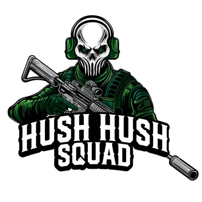
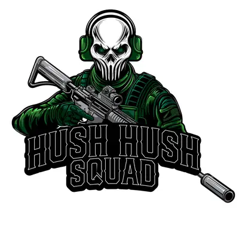
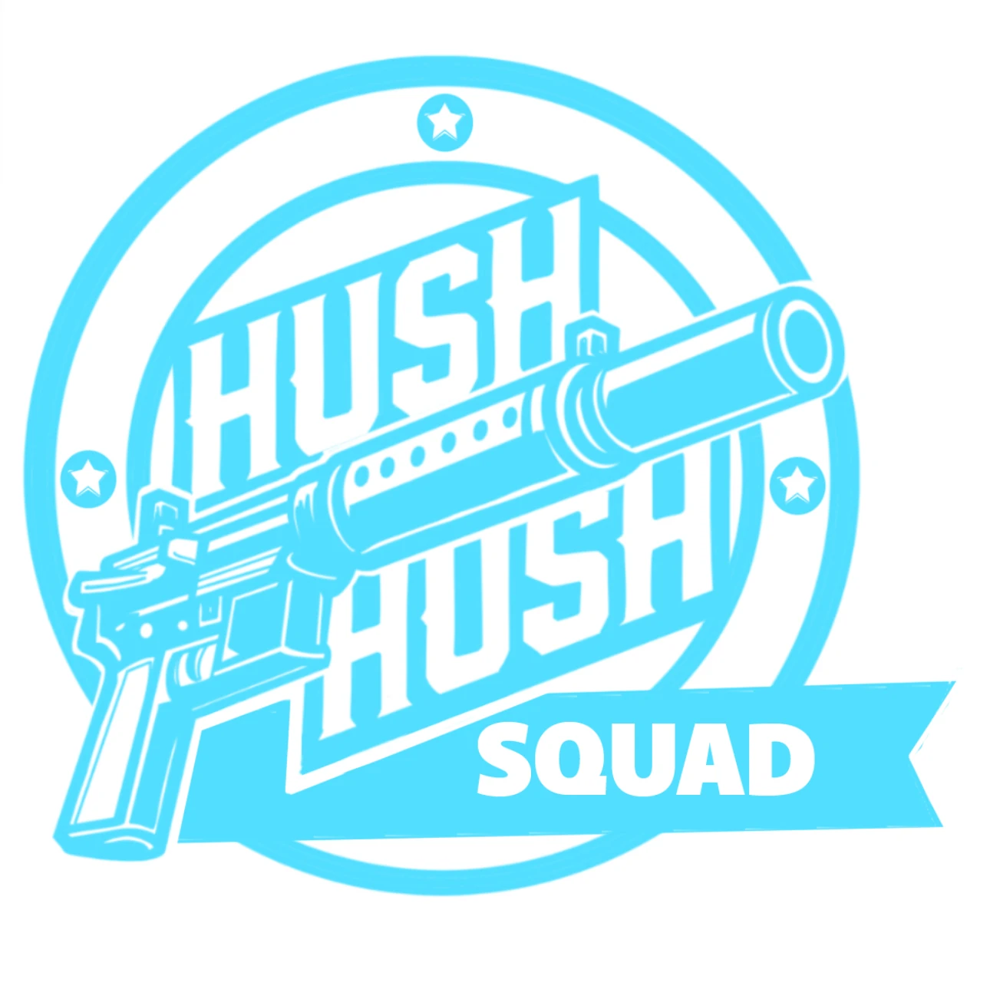
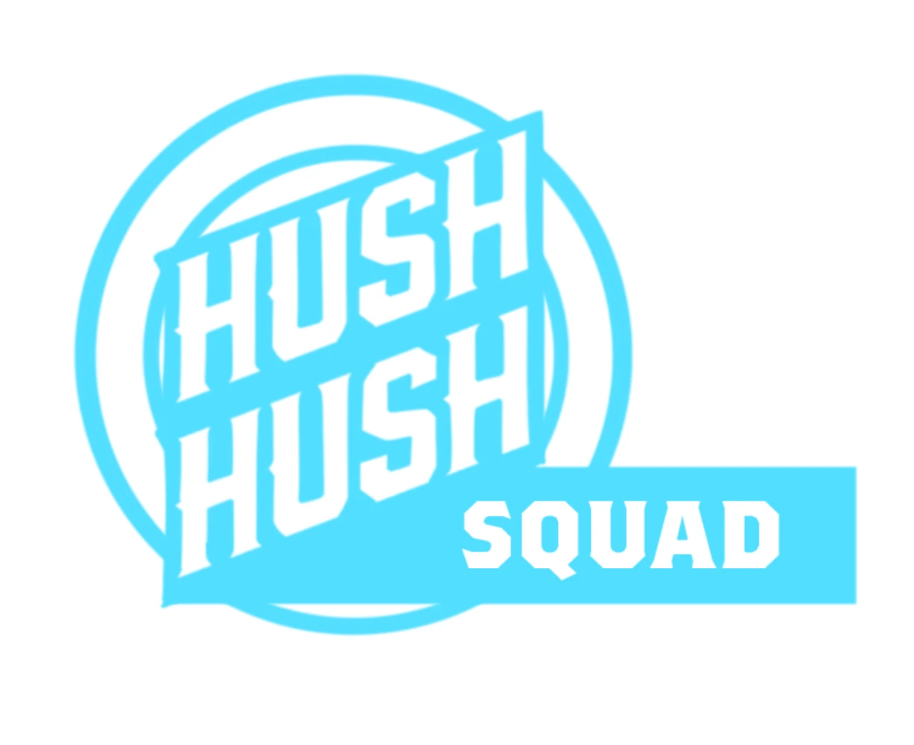
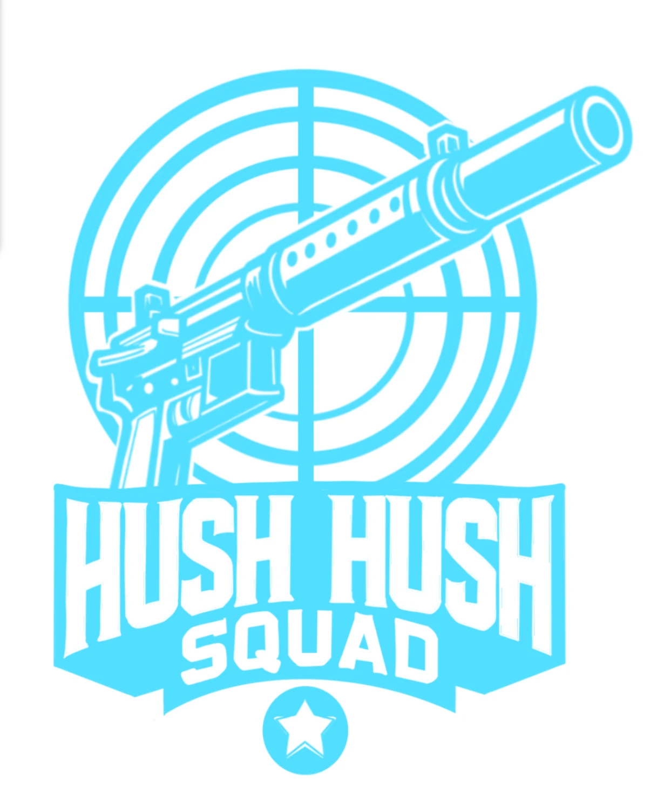
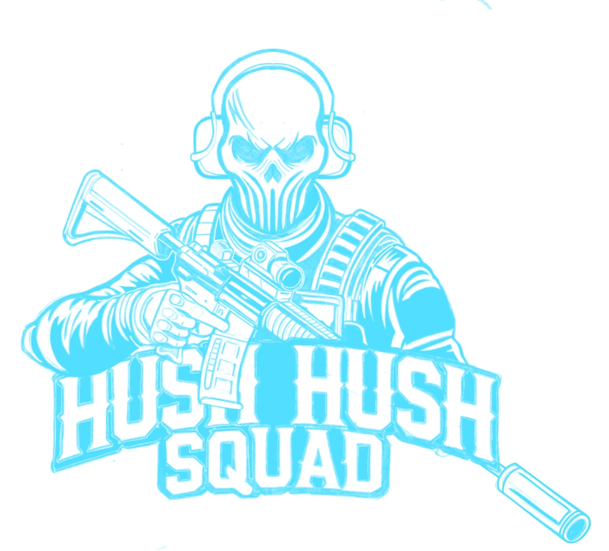
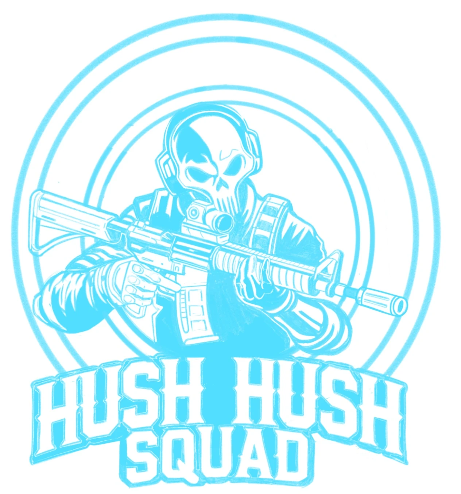
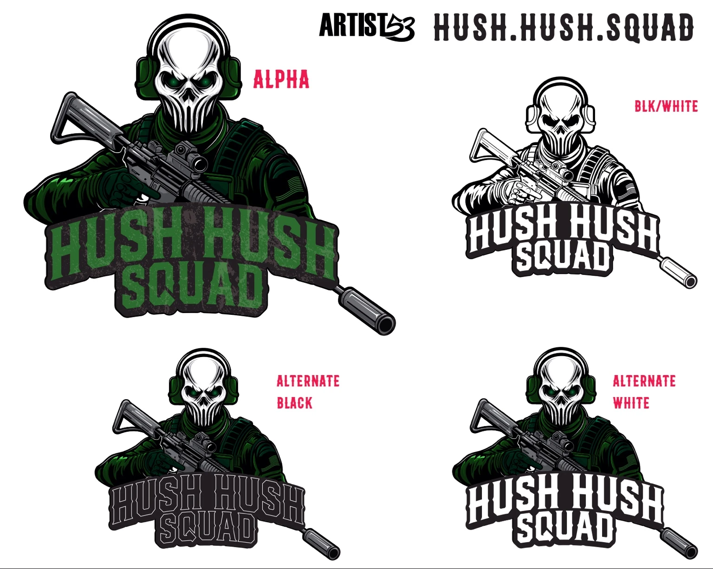

Mascot Identity Case Study
HUSH.HUSH.SQUAD
A tactical mascot identity built around a masked squad figure, bold athletic lettering and a dark green visual system designed for apparel, social media and community branding.
View The ProjectBack To LogosFinal Identity
A Mascot Made To Command Attention
The finished mark combines a skull-inspired mask, protective hearing gear, tactical clothing and a strong illustrated silhouette. The curved wordmark and suppressor detail give the identity a clear focal point while keeping it flexible enough for shirts, patches and digital use.

Identity System
Built For Different Backgrounds
The system includes a full-color primary mark, a black-and-white version and alternate treatments for dark and light applications.



Development
Exploring The Direction
The project moved through multiple badge structures, target shapes, weapon placements, character poses and lettering treatments before arriving at the final mascot identity.





